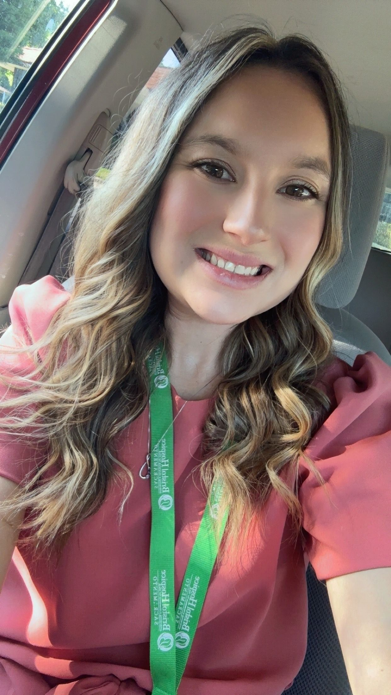

W.I.S.H. Charity supports seniors, Veterans, and those facing life-limiting illness — providing the small acts of comfort, the unmet needs, and the moments of grace that hospice care alone cannot reach.
W.I.S.H. Charity exists to fund the moments of comfort that fall outside the boundaries of medical care: a Veteran's final wish, a senior's unmet need, a family's burden gently set down at a time when every act of compassion matters most.
We work alongside hospice agencies, senior care providers, and Veteran service organizations across Placer County and Northern California to identify quiet, urgent needs — and to meet them with grace.
"To provide comfort and compassion for those experiencing a life limiting illness, disease or accident with a heavy focus on seniors, Veterans and those at end of life."
Every program is built around a single principle: that the dignity of a life does not diminish in its final season, and that small, well-placed gifts can carry enormous meaning when given at the right moment.
Direct financial support for Veterans facing serious illness — covering unmet expenses that VA benefits, hospice coverage, and family resources cannot reach. Inspired by the "We Honor Veterans" tradition we have served alongside throughout our careers.
Quiet, practical gifts for individuals in hospice or palliative care — a final gathering, a memory project, a comfort item, a wish fulfilled. We work through partner hospice agencies who identify the need, and we provide the means.
Bridge support for isolated and low-income seniors at moments of crisis — a medical co-pay, a transportation gap, a missed grocery run, a small repair that unlocks safety at home. Modest in cost. Transformative in moment.

Samantha McCoy is a career hospice professional who founded W.I.S.H. Charity in 2024 after more than a decade walking alongside families in hospice rooms, senior care centers, and the final chapters of life.
Her professional path — from Westview Healthcare Center, to HomeWell Senior Care, to her current role as a Hospice Liaison at Bristol Hospice in Sacramento — gave her a clear view of the small, urgent needs that fall outside the medical system: the framed photograph a Veteran wanted to leave his grandson, the final gathering a family could not afford, the simple wish that no benefit plan covered.
W.I.S.H. was founded to fill exactly that space — a small, focused 501(c)(3) that partners with hospice agencies, Veteran service organizations, and senior care providers to fund the quiet acts of compassion that turn a final season into a final gift.
We are a small organization that responds personally to every message. Whether you are a hospice agency with a family in need, a Veteran service organization looking to partner, or someone who would like to support our work — we welcome the conversation.